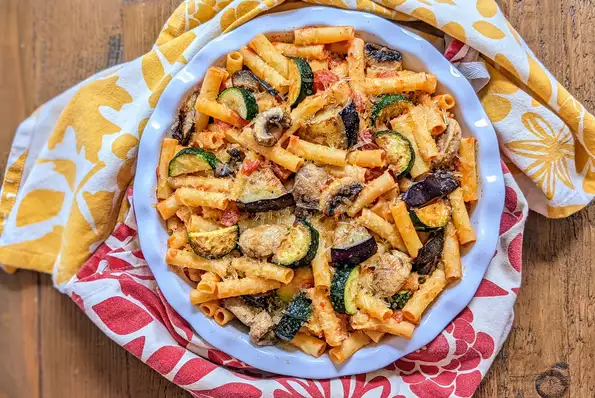

HOME
Eggplant Zucchini Pasta

Eggplant Zucchini Pasta
376 calories; protein 22.8g; carbohydrates 26.5g; fat 19.7g; cholesterol 48.4mg; sodium 1282.2mg.
Ingredients
- 1 eggplant, diced into 1/2-inch squares
- 2 tablespoons extra-virgin olive oil, divided
- 1 tablespoon butter
- 1 zucchini, diced
- 2 cloves garlic, chopped
Steps
- Bring a saucepan of water to a boil. Cook eggplant in the boiling water until mostly tender, about 8 minutes. Drain.
- Heat 1 tablespoon olive oil and butter in a skillet over medium-high heat. Saute zucchini and garlic until zucchini starts to soften, about 5 minutes. Add mushrooms; cook until beginning to brown, about 3 minutes. Add eggplant; saute until browned, about 2 minutes.
- Heat remaining olive oil in another saucepan over medium-high heat. Saute onion until golden, about 4 minutes. Add tomato sauce, diced tomato, basil, marjoram, salt, and pepper. Reduce heat to medium-low and bring sauce to just a boil.
- Bake in the preheated oven until cheese is well melted, about 20 minutes.